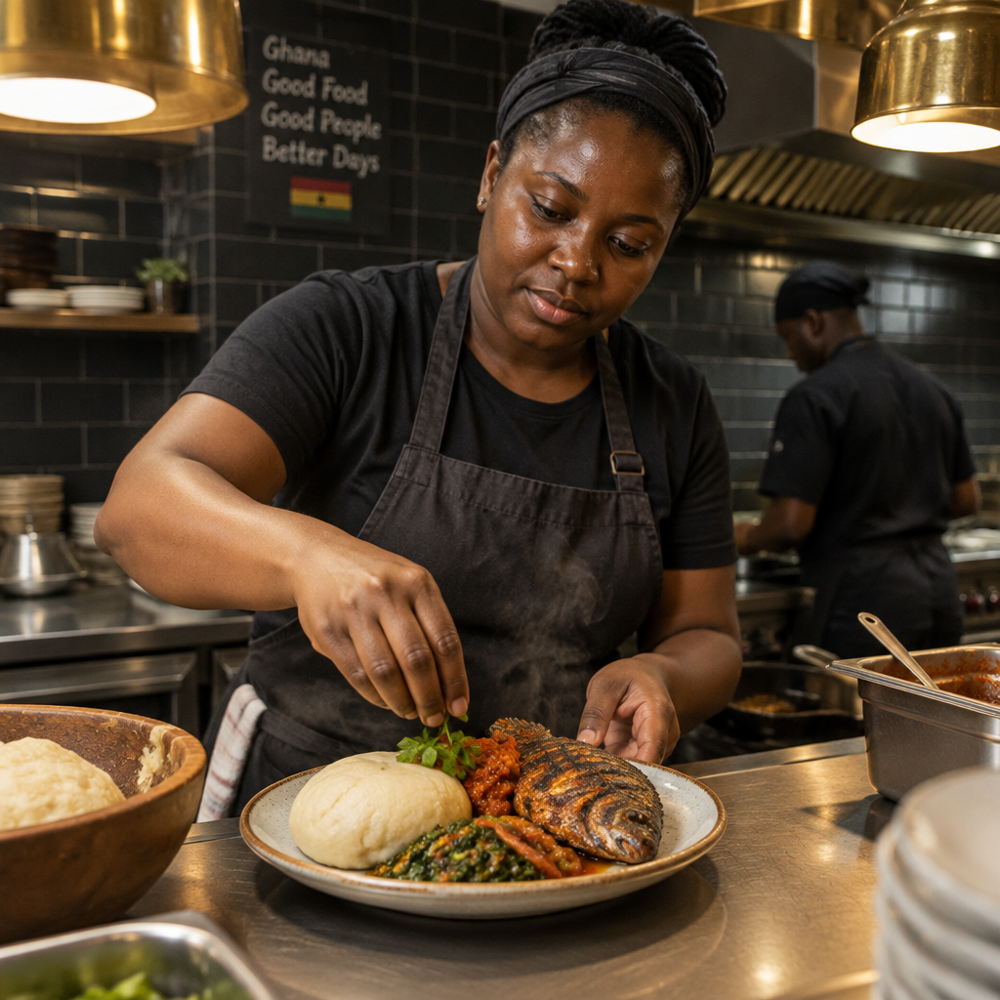

The jollof recipe is older than the restaurant. So is the banku, the shito, and the habit of cooking for one more person than you planned.
Mimi's began the way most good Ghanaian food does: a pot on the fire, and neighbours finding a reason to pass by at lunchtime. What started as cooking for family turned into a small kitchen, then a room in Accra with a charcoal grill that never really goes cold.
We kept the recipes exactly as they were and changed one thing only: how they are served. Proper plating, generous portions, and a table you are in no hurry to leave.
Today the kitchen is bigger and the queue is longer, but the jollof still goes out in small batches and somebody still tastes every pot before it leaves the pass.
Fish, pepper, garden eggs, plantain. We buy at dawn and write the specials after, not before.
Vegetarian and lighter plates get the same care as the grill. Nobody gets the afterthought bowl.
You get welcomed properly, advised honestly on what to order, and nobody rushes your table.
Book a table for two, or bring the whole family on Sunday for waakye. We'll take it from there.
Reserve a table